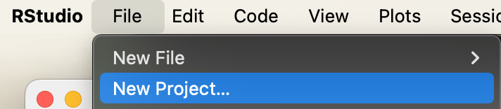
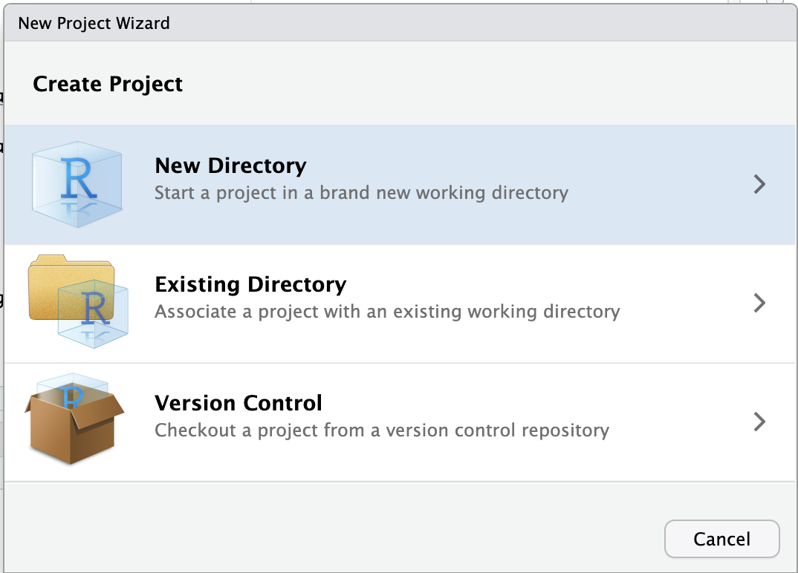
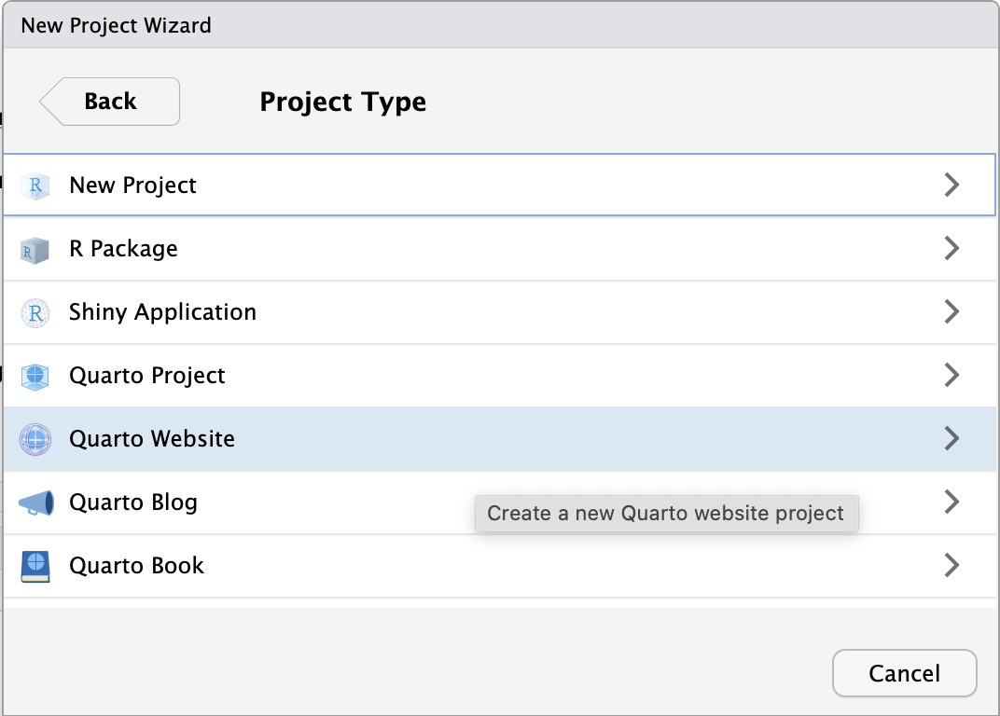
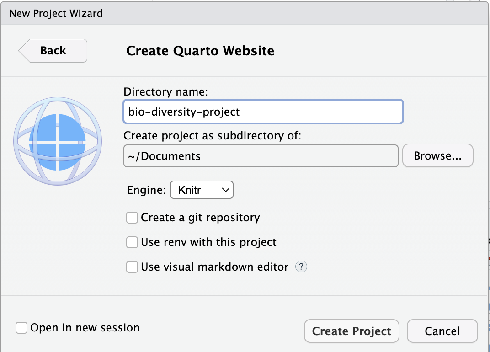
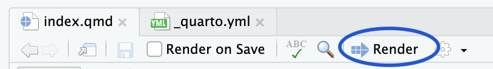
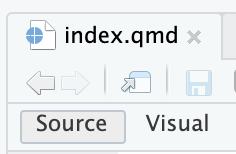
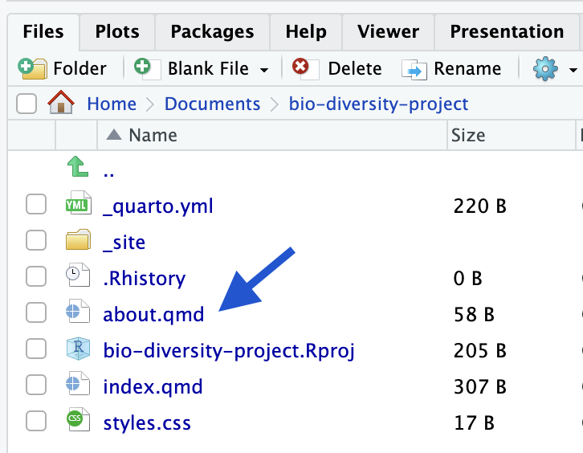
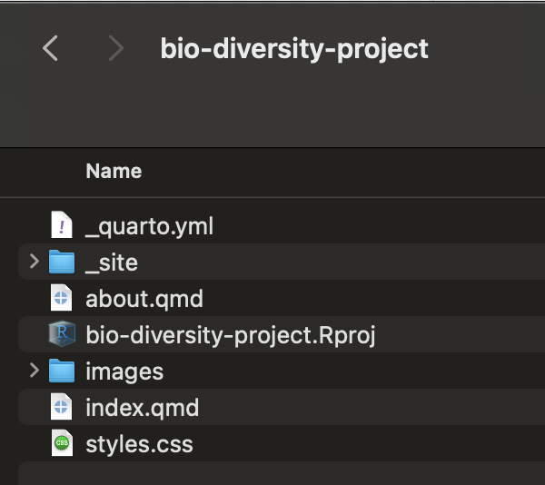

Quarto Workshop
Before we start
We will need to install the programming language R and the IDE (Integrated Development Environment) RStudio:
- Download and Install R
- Download and Install RStudio Desktop (Click on the button under
2: Install RStudio)
Creating a new Quarto Website project
After install R and RStudio Desktop, open RStudio.
- On the menu on the top, click on
Filethen selectNew Project - A window will pop up, click on the
New Directoryoption  - For project type, select
Quarto Website - For my directory (folder) name I chose
bio-diversity-projectand I will have my project live in myDocumentsfolder  - RStudio creates a default website for you, you can see what it looks like by clicking on the
Renderbutton at the top of the top-left panel  - Your browser window should pop up the website
- Now you are all set up to make some changes to it to make your own.
Customizing your website
The file that should be open for editing is index.qmd – that is the first page users see when they go to your website. We call it the landing page.
You can switch between Source and Visual editing by click on the option you prefer at the top of the document 
I personally prefer the Source mode.
Change the text and the title. Here’s what I have for my index.qmd:
---
title: "Adriana's Website"
---
I'm an Assistant Professor of Practice in Computer Science, where I teach students
to develop a passion for all things coding. Being a Data Scientist (in addition to
being a computer scientist), I am also involved in a number of efforts in data
science education.Click the render button to see your changes.
The text we are typing in our index.qmd is markdown, which is a way to format text documents. Here’s some markdown syntax you should try:
- use
*around a word to make that word italics - use
**around a word (or any stretch of text) to make it bold
Here’s my updated file:
---
title: "Adriana's Website"
---
I'm an *Assistant Professor of Practice* in Computer Science, where I teach students
to develop a passion for all things coding. Being a *Data Scientist* (in addition to
being a computer scientist), I am also involved in a number of efforts in data
science education.Click the render button to see your changes.
Check out this Markdown Basics page for more formatting options.
Adding links
To add a link, you use [] around the text that will be clickable, followed by the web address inside (). I’m linking the words Computer Science in my text to my department website:
---
title: "Adriana's Website"
---
I'm an *Assistant Professor of Practice* in [Computer Science](https://cs.arizona.edu/),
where I teach students to develop a passion for all things coding. Being a *Data Scientist*
(in addition to being a computer scientist), I am also involved in a number of
efforts in data science education.Click the render button to see your changes.
Changing the About page
Let’s work on the about.qmd page. On the right-bottom panel there’s a list of files in your website project. Click on about.qmd to open this file to edit 
Here’s some text for your about page: The Bio/Diversity Project is a collaborative effort between WISE, Saguaro National Park and the Friends of Saguaro National Park, with additional support from local environmental organizations, aimed at increasing the diversity of voices included in discussions of environmental problems and the development of their solutions. By increasing access to innovative environmental science educational opportunities and training, mentoring, and work experience along the K-16+ educational pipeline, we aim to get students excited about environmental science and support them along their educational journeys and into the workforce
Add a links to these websites:
- https://biodiversityproject.arizona.edu/
- https://wise.arizona.edu/
- https://www.nps.gov/sagu/index.htm
- https://www.friendsofsaguaro.org/
Click the render button to see your changes.
Adding images to About page
Let’s add a saguaro image to our about page.
A good website for fair-use images is unsplash. Find a free image you like and download it.
We will create an images folder in our project to keep things organize.
- Find your project folder in your computer
- Create a new folder called
images - Copy the image you downloaded over to your
imagesfolder
Now that you have an image you like to use, let’s add it to our About page. Here’s the syntax to add an image in quarto markdown (I changed the name of my image file to saguaro:
You write a caption between the [] and then between the () you have the path to your image file. Since my saguaro.png file is inside my images folder in my project, my image path is images/saguaro.png.
Adding images to index.qmd
Let’s go back to the index.qmd and add a profile picture to our page. First make sure you have an image file you want to use inside your images folder.
Here’s my updated page with my image (I left the caption empty for this one for now):
---
title: "Adriana's Website"
---

I'm an *Assistant Professor of Practice* in [Computer Science](https://cs.arizona.edu/),
where I teach students to develop a passion for all things coding. Being a *Data Scientist*
(in addition to being a computer scientist), I am also involved in a number of
efforts in data science education.I clicked render and the image is too big, so let’s make it smaller. Here’s some options of syntax to set the width of an image:
- width in pixels:
{width=300} - width in inches:
{width=4in} - width in percent of the total space:
{width=80%}
If you want more information on options for formatting images you can check out the Quarto help page on Figures.
The page would look better if the text were side-by-side with my profile image. We can create columns to address this issue.
Adding columns to our page
Here’s the syntax we are going to use to create columns:
:::: {.columns}
Text and other columns go here
::::We first create a block of columns as shown above.
Then each individual column will have the following syntax:
::: {.column}
Specific column text and images go here
:::Here’s what my index.qmd document looks like:
---
title: "Adriana's Website"
---
:::: {.columns}
::: {.column}
{width=300}
:::
::: {.column}
I'm an Assistant Professor of Practice in Computer Science, where I teach students
to develop a passion for all things coding. Being a Data Scientist (in addition to
being a computer scientist), I am also involved in a number of efforts in data
science education as well.
:::
::::
Individual columns can also have width (and other properties) set:
::: {.column width="30%"}
Specific column text and images go here
:::